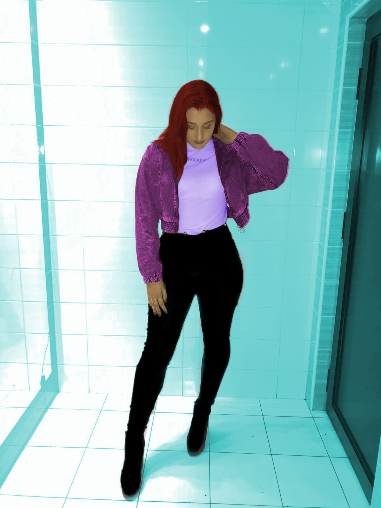
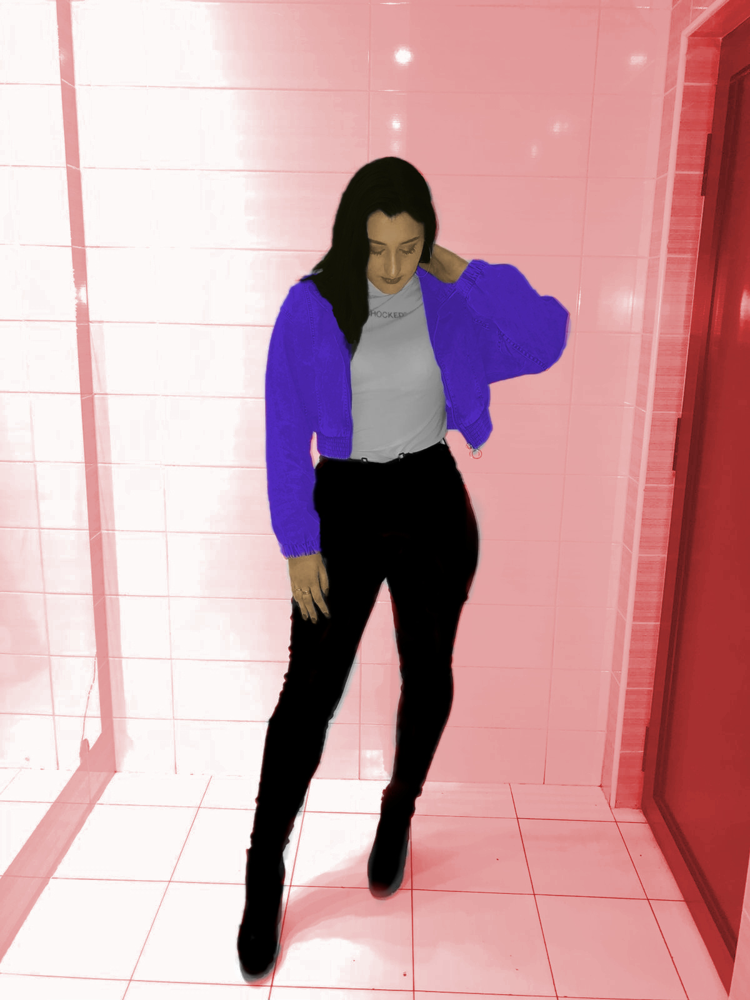
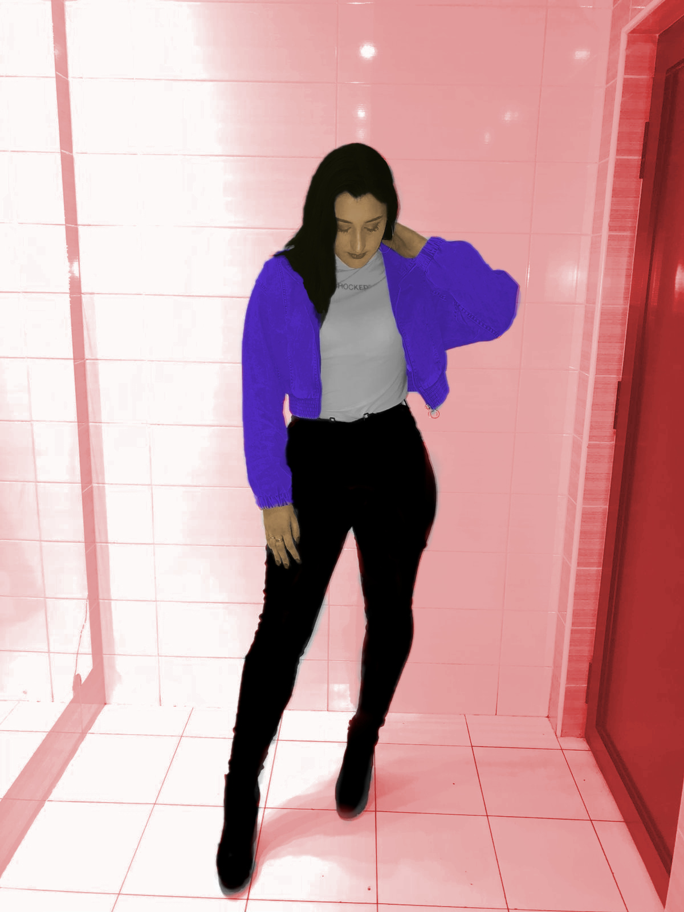

Za prvu viježbu smo imali napraviti font slova. Moj font nije savršen zato što sam htjela nešto drugačije, nešto što nije uobičajeno.
Na ovoj slici smo vježbali vraćanje boja, tj. imali smo zadanu crno bijelu fotografiju kojoj smo vratili pripadajuće boje.
Za nastavak iste vjržbe smo koristili vlastitu fotografiju, koja je bila crno-bijela te smo joj mijenjali boje.
 

Primjeri idućih slika su jedne od mojih omiljeni. Učili smo raditi u GIMPu. Jedna stvar je sigurna a to je da cu preko ljeta sigurno još slika uređivati i usavršavati svoje znanje.


Jedna od zadnji vježbi je bio GIF, isto tako jedna od zanimljivijih vježbi ;)